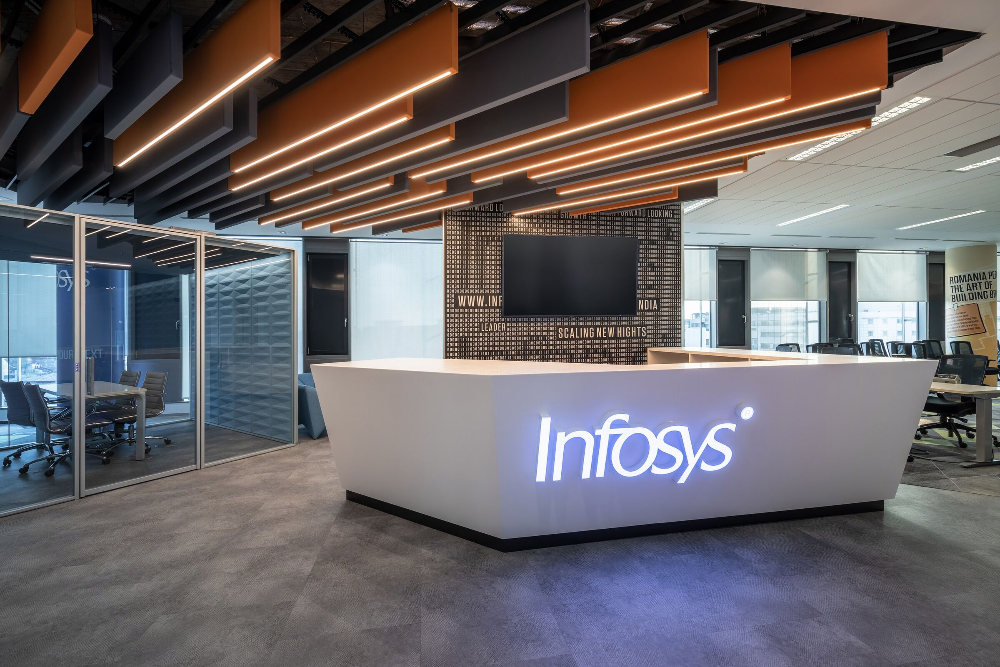
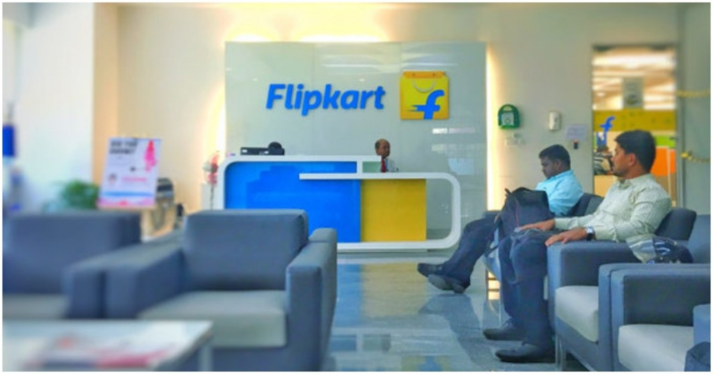
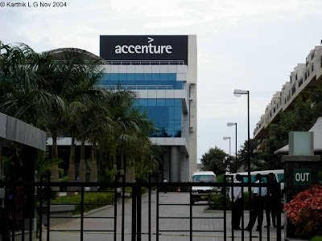
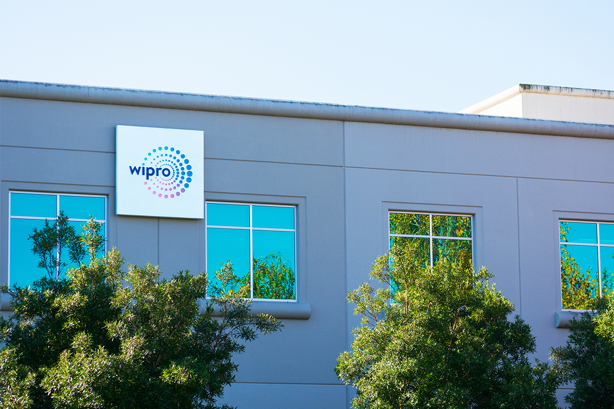
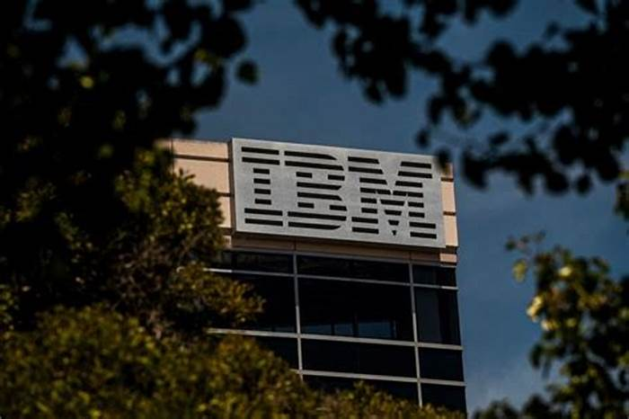
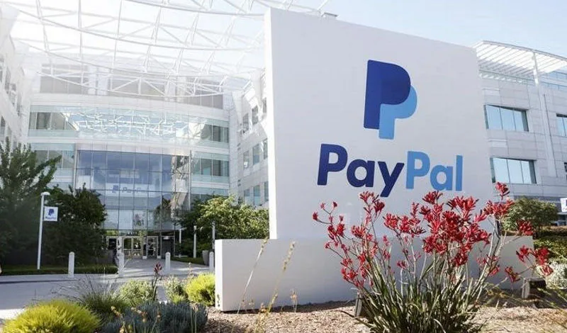
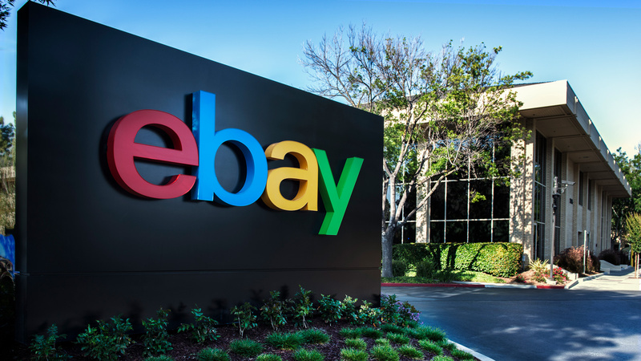

Eligiblity Crietria For Placement in Top Companies.
Twitter
Degree: Must hold a recognized bachelor’s or master’s degree.No Active Backlogs: No active backlogs during the selection process.Attendance: No pending attendance requirements with the college.
Full-Time Degree: Must be from a full-time degree course recognized by the
Central/State Government of India. KNOW MORE

Infosys
Academic Record: Minimum 60% in 10th, 12th, and Graduation.Qualifications: Open to B.E./B.Tech/M.E./M.Tech, MCA/M.Sc. in specific
fields.Backlog Policy: No pending backlogs allowed.
Education Gap: Up to 2 years permitted..nterview Restriction: Must wait 9 months between Infosys interviews. KNOW MORE
Google
Degree: Bachelor’s or Master’s in Computer Science or related technical
fieldSkills: Proficiency in programming languages like Java, C++, or Python.Experience: Relevant experience in the field, including internships or
projects.
Problem-Solving: Strong analytical and problem-solving abilities.Leadership: Leadership EXperience and the ablity to work in the teamKNOW MORE
Amazon
Educational Qualification: Bachelor’s or Master’s degree in a relevant
field1.Technical Skills: Proficiency in programming languages and understanding of
QA methodology1.Experience: Freshers or professionals with up to 3 years of experience,
depending on the role1.Problem-Solving: Creative and analytical problem-solving skillsKNOW MORE

Flipkart
Educational Qualifications: A Bachelor’s degree is typically required. For
technical roles like Software Development Engineer, a degree in computer science or equivalent is often
necessary1.
Skills: Strong verbal and written communication skills are essential.
Experience: Freshers are eligible for some roles.
KNOW MORE

Accenture
Eligibility: Graduates of 2023 with a minimum of 60% in academics across
10th, 12th, and degree courses. Qualifications: B.E., B.Tech., MCA, or MSc in Computer Science from
recognized institutions.
Branches: Open to all engineering disciplines without any restrictions.
Backlogs: Candidates must not have any active backlogs during the
selection process.
KNOW MORE
Linkedln
Academic Criteria: A minimum of 60% or above in B.Tech, Class X, and XII1.
Degree: Completion of B.Tech/B.E, preferably in the year 20202.Technical Experience: Experience in software design, development, and
algorithm-related solutions is required2.Technical Experience: The recruitment process may involve an online round,
technical rounds, system design rounds, and an HR round1.KNOW
MORE

Wipro
Academic Criteria: Minimum of 50% in 10th and 12th standards, and at least
60% or 6.0 GPA in graduation from recognized institutions1.
Degree: Candidates must be full-time graduates of BSc and BCA for the 2024
batch2.Backlog Criteria: No active backlogs are allowed2.Education Gap: A maximum of 3 years is permitted between 10th and
graduation2.KNOW MORE
TCS
Academic Performance: Minimum of 60% or 6 CGPA in Class 10, Class 12, and
in graduation1.
Degree: Candidates should be from BE/B.Tech, ME/M.Tech in any discipline,
MCA with B.Sc/BA/BCA/B.Com1.Age Limit: Applicants should be between 18 to 25 years old1.Work Experience: Should not exceed 3 years1.KNOW MORE
HCL
Academic Performance: Candidates should have at least 60% in their 10th,
12th, and Graduation1.
Year of Passing: Open to graduates from the 2024, 2023, and 2022 batches1.
Degree: Graduates and postgraduates are eligible to apply1.Coding Skills: Applicants need to have strong coding skills1.Backlogs: No active backlogs are allowed1.KNOW MORE
Oracle
Academic Criteria: Candidates should have secured 60% and above in 10th
standard, Intermediate, and B.E/B.Tech1.
Backlogs: No backlogs are allowed1.Work Experience: Should not be more than 3 years1.Educational Qualification: BE/B.Tech/ME/M.Tech in any discipline, MCA with
B.Sc/B.A/BCA/B.Com are eligible1.KNOW MORE
Microsoft
Degrees: Bachelor’s or Master’s in engineering, computer science, or
related fields12.
CGPA: Minimum of 7/10 CGPA.Backlogs: No backlogs allowed.Graduation Year: Candidates graduating in 2024 are preferred.KNOW MORE

IBM
Degrees: Any Graduates/Post Graduates, BE, B.Tech, MBA, MCA, ME, M.Tech
with good aggregate. Academic Performance: Minimum of 60% or above in Class 10th, 60% or above
in Class 12th, and 65% or above or 6.5 CGPA in graduation. Backlogs: No active backlogs are allowed.
Education Gap: A maximum of 1-year education gap is permitted.
KNOW
MORE
Impetus
Degrees: BE / B.Tech / MCA / M.Tech1.
Skills: Knowledge of JavaScript, jQuery, HTML/CSS, SQL.
Problem-Solving: Strong logical and problem-solving skills are required1.
Role: Responsibilities include development of project-related assignments
and collaboration with clients and internal product teams1.KNOW
MORE
Dell
Degrees: B.Tech/M.Tech in fields like IT, CSE, ECE, EI, and EEE. Academic Performance: At least 40% overall in X, XII, UG, or PG.Skills: Knowledge of software testing and automation tools/scripting.
Familiarity with Atlassian tools.Technical Knowledge: Understanding of Server, Storage, networking, Server
OS.KNOW MORE
Nvidia
Degrees: B.Tech/ Dual degree/ M.Tech/ MS in CS/ EE/ EC departments.
CGPA: A minimum of 6 CGPA.
Selection Process: Includes two rounds of online technical tests via
HackerRank, followed by two rounds of discussions.KNOW
MORE

Paypal
Degrees: Engineering, science, statistics, or mathematics degree with a
strong technical background in machine learning. CGPA: Minimum of 8/10 CGPA.
Experience: 2+ years of hands-on experience with problem-solving using
Machine Learning for specific roles.
Academic Performance: 60% or above in 12th standard/Diploma and in
college graduation3.
KNOW MORE

Ebay
Degree: Bachelor’s degree from any stream1.
Skills: Tech-savvy, comfortable with using various live chat software, and
able to multitask1. Sales Skills: Good sales skills are preferred1.Communication: Excellent written communication skills and the ability to
deliver messages concisely1.KNOW MORE
Apple
Degree: Bachelor’s degree or higher1.
Experience: Content review or similar environment experience preferred1.
Skills: English reading, writing, comprehension, and excellent active
listening skills1.KNOW MORE
Facebook
Degree: Full-time graduate candidates only.
Technical Expertise: BTech and graduate candidates with coding expertise.
Skills: Excellent problem-solving skills and a self-starting attitude. Knowledge: Proficiency in coding and AI is preferred.KNOW MORE